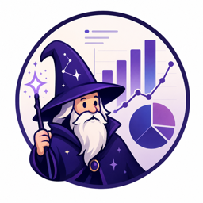

Curator
Prepares the dataset and verifies the source trustworthiness. The curator holds the system together.

Data VizardAgent workflow plugin
Curate, shape, and ship your data’s story.
Data Vizard turns a dataset into a staged workflow. Run the stages all at once or one by one: curate the source, find the shape of the story, tighten the narrative, critique the draft, and ship a self-contained HTML outcome.
Five roles, one workflow
Run them all together or individually. Each role carries a different piece of the work, so the process stays visible instead of disappearing into one opaque prompt.
Analyst
Looks for patterns, comparisons, and the shape hiding in the data.
Narrator
Tightens the narrative so the story says only what it needs to say.
Critic
Checks the draft for weak claims, missing links, and fuzzy handoffs.
Designer
Turns the finished story into a polished, self-contained HTML outcome.